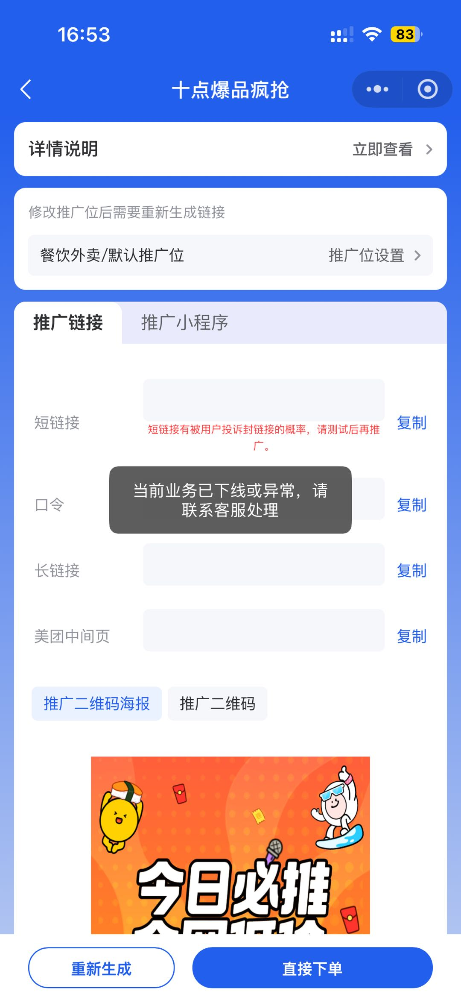
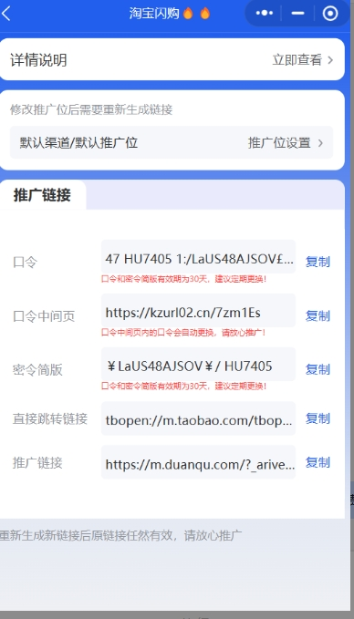

申请链接或密令要一次提交哪些字段？
业务、用户版本、用户标识、推广方式、推广位/PID、期望密令、申请主体、使用渠道、预计量级、期望生效日和到期日。涉及白名单时还要登记平台侧主体和审核状态。
统一新链接申请、白名单、PID、密令、二维码、换链、回收和数据验证的操作步骤。
申请 → 查重 → 绑定推广位/PID → 审核 → 生效确认 → 首单验证 → 到期提醒 → 续期或回收 → 用户通知。
| 台账字段 | 要求 |
|---|---|
| 基础字段 | 业务、用户、密令词、申请主体、推广位/PID |
| 时间字段 | 申请日、生效日、到期日、提醒日、回收日 |
| 状态字段 | 待申请、审核中、已生效、待续期、已失效、已回收 |
| 验证字段 | 是否跟单、是否参与激励、首单时间、负责人 |
近 30 天累计订单低于 300 单（日均低于 10 单），官方于次月 5 日回收；回收后冻结 1 个自然月，期满后于次月 1 日重新开放全渠道申请。仅适用于自定义密令，基础模板密令不受影响。
2026-07-17 上线记录确认，可按用户配置其名下全部密令，也可只配置单个密令，记录的同步周期约 2 分钟。紧急续期先检查正常续期条件；不满足时只能在授权范围内使用白名单或中台自动续期，并以当前页面返回的成功/失败状态为准。
同一用户在同一平台只保留一条密令导入记录，需要多个名额时填写数量，不重复导入多行；其他业务的低产回收、续期门槛、UV/订单要求和支持批次会变化，必须引用当期通知。
业务、用户版本、用户标识、推广方式、推广位/PID、期望密令、申请主体、使用渠道、预计量级、期望生效日和到期日。涉及白名单时还要登记平台侧主体和审核状态。
不代表。至少验证打开成功、落地业务正确、参数保留、可完成下单、首笔订单能归因、参与当期活动。任一步失败都不能把链接交付为“已验证”。
先区分单用户、单推广位、单会场、单域名还是全业务，再查询同批链接。只替换受影响范围，明确旧链状态、截止时间和新链验证方式，避免不必要的全量换链。
台账必须记录唯一素材编号、业务、用户、渠道、批次、分配人、分配时间和回收状态；分配时加锁，回收后重新验证才能再次使用。
2026-08-11 群内阶段口径为关闭自由取新链，新用户需先完成商务报备；此前已经取得的链接不受该次调整影响，历史取链用户曾安排批量加入白名单。该白名单批次具有时间性，当前操作前仍要查询最新正式通知。
若后台明确提供“重新生成”，直接生成新链接，再验证跳转、参数、下单和归因；同时记录旧链停用状态。不要只把原链接重复发送给用户。
近 30 天累计订单低于 300 单（日均低于 10 单），官方于次月 5 日回收；回收后冻结 1 个自然月，期满后于次月 1 日重新开放全渠道申请。该规则只适用于自定义密令，基础模板密令不受影响；执行前仍应留意后续官方变更通知。
2026-07-17 上线记录明确：既可按用户标识配置其名下全部密令，也可只配置单个密令，当前同步周期记录为约 2 分钟。需要紧急续期时先检查正常续期条件，再按授权使用白名单或自动续期；同步周期和入口若有调整，以中台当前页面为准。
不需要。一个用户在同一平台只保留一条导入记录，通过数量字段增加名额；历史操作曾需导出后手工编辑数量，后续方案为相同用户自动累加。批量执行前先用一条测试记录确认当前导入模板和累加逻辑。


已通知上线、待验收 美团返返微信小程序H5；不扩大到全部链接
8月26日商务通知新增微信小程序H5取链，旧已使用推广位可能取不到，需新建推广位，通知有效期为30天。PC/手机到期提示仍是需求；正式版本、打开与订单归因关键路径未齐，不写成全端已验收。
2026-08-24—08-30 飞书群上下文、引用消息与关联附件复核；更新：2026-08-31
现行 自动续期不保证每次成功
8月25日商务明确自动续期不是100%成功，用户也应关注结果。检查有效期、续期结果、订单与渠道标识，再决定人工续期；“官方未推送失效”只是讨论中的解释，不能当已确认根因。
2026-08-24—08-30 飞书群上下文、引用消息与关联附件复核；更新：2026-08-31
待复核 0.1元自提与超级月卡不可互套
8月24日0.1元自提咨询回复暂不支持申请新密令；8月29日另一会场咨询回复可提供文字加数字组合申请。不能概括京东全业务均支持或均不支持；交付前确认准确会场、名额和绑定结果。
2026-08-24—08-30 飞书群上下文、引用消息与关联附件复核；更新：2026-08-31
现行 仅美团闪购-零食天天有优惠；库存动态
8月25日“可以、加库存、已添加”与前序业务截图对应，确认该活动支持申请密令。库存已补充是当时状态，不保证长期有库存；申请后核对绑定用户与首单归因。
2026-08-24—08-30 飞书群上下文、引用消息与关联附件复核；更新：2026-08-31
已通知上线、待验收 PC：闪购品牌日叠红包、社群限量福利淘天版
8月26日通知及界面截图显示口令中间页列表已上线，两项活动的中间页2共用。移动端和其他活动未确认；发布版本和取链到归因验证未齐前保留待验收，不把图片中的专属链接公开。
2026-08-24—08-30 飞书群上下文、引用消息与关联附件复核；更新：2026-08-31
现行 既有闪购夜宵专享中间页链接
夜宵专享会场原中间页链接已自动升级，推广者无需重新取链。该结论只适用于本次带路由能力的中间页，普通短链、长链或二维码仍按链接生命周期规则处理。
商务&客服业务沟通群 2026-09-01 升级通知；更新：2026-09-07
现行 密令不在云瞻联盟名下且官方未说明原因
云瞻无法代为申请不在本联盟名下的黑名单密令，应建议推广者更换可用密令；如坚持使用原密令，只能由推广者自行联系官方申请到自己的联盟名下。不能把官方未披露的原因解释成确定违规。
商务&客服业务沟通群 2026-09-01 完整问答与处理结论；更新：2026-09-07
{kind=link}
{kind=link}